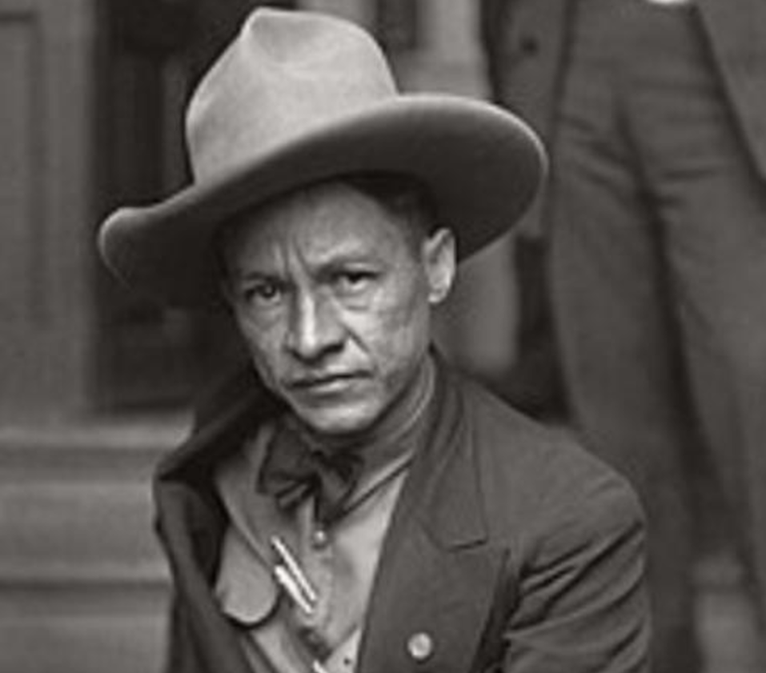
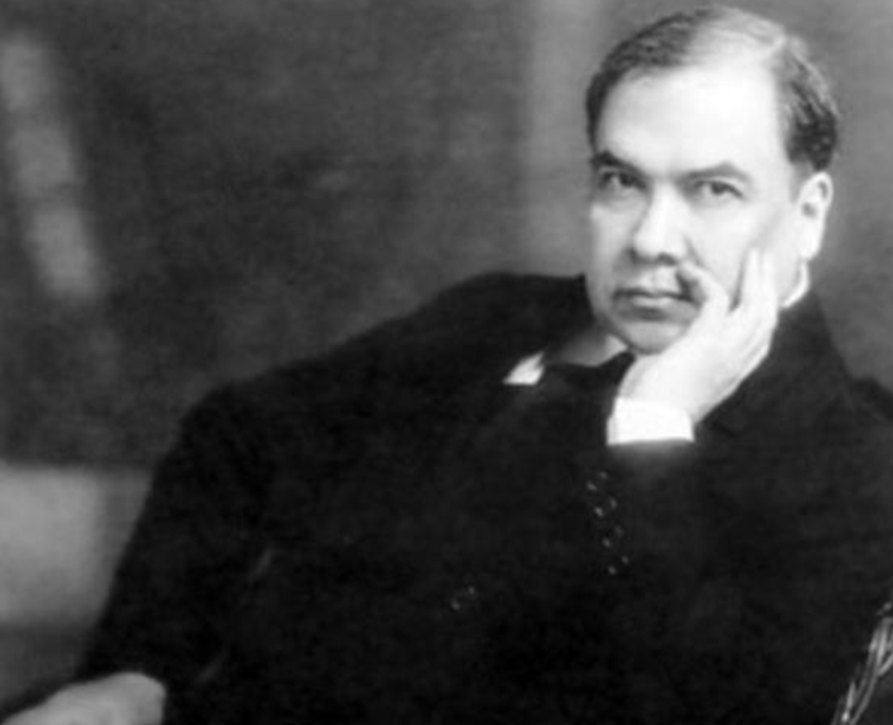

PERSONAJES DESTACADOS DE NICARAGUA
AUGUSTO CÉSAR SANDINO
Augusto Nicolás Calderón Sandino conocido como Augusto César Sandino nació en 1895
y murió en 1934 y ha sido reconocido con el paso del tiempo como uno de los
liberadores del pueblo de Nicaragua. Fue campesino, luchador y político.
Natural de Masaya, Sandino creció de manos en manos ya que sus padres lo mandaron
a vivir con su abuela, y de ahí a la familia paterna. Eso le forjó una fuerte
personalidad, y con 17 años ve una acción estadounidense con derramamiento de sangre.
Años más tarde dispara a un conservador y huye por distintos países centroamericanos
como Honduras o Guatemala, pero es en México donde se le inculca una ideología
antiimperialista que poco después desarrollaría aún más.
En 1934, Sandino cayó en una trampa del Gobierno Nicaragüense conjuntamente con
Estados Unidos y fue asesinado por orden de Anastasio Somoza, que a su vez recibió
órdenes de Estados unidos.
RUBÉN DARÍO
Rubén Darío, cuyo nombre real era Félix Rubén García Sarmiento, fue un prestigioso poeta
nicaragüense, que ejerció también de periodista y de diplomático, nació el día 18 de enero
del año 1867 en Nicaragua, en el departamento de Matagalpa, en la ciudad de Metapa,
actualmente conocida como Ciudad Darío. Sus padres fueron Manuel García y Rosa Sarmiento.
En 1882 decide viajar a El Salvador, país presidido en aquella época por Rafael Zaldívar,
cuyo secretario es el poeta Joaquín Méndez Bonet, de nacionalidad guatemalteca.
En 1883 vuelve a Nicaragua, y decide establecerse en su capital, la ciudad de Managua.
En 1886 Rubén decide viajar a Chile, país en el que permanece durante tres años, y en el
cual se dedica a escribir en diversas revistas y periódicos, entre ellos “El Heraldo”,
“La época” o “Libertad electoral”.
En 1892 Rubén Darío decide desplazarse a Europa. Viaja a Madrid como miembro de la delegación
diplomática de Nicaragua, donde conoce a muchos políticos y a prestigiosos escritores.
En 1905 publica “Cantos de vida y esperanza, los cisnes y otros poemas”. Y en 1913, en la revista
“Caras y caretas”, una autobiografía denominada “La vida de Rubén Darío escrita por él mismo”.
El 6 de febrero del año 1916 Rubén Darío fallece en la ciudad nicaragüense de León, en cuya
catedral fue sepultado. Rubén Darío es uno de los poetas del siglo XX que más influencia
tuvo sobre otros autores, como Juan Ramón Jiménez, Federico García Lorca, Pablo Neruda o Antonio Machado.

